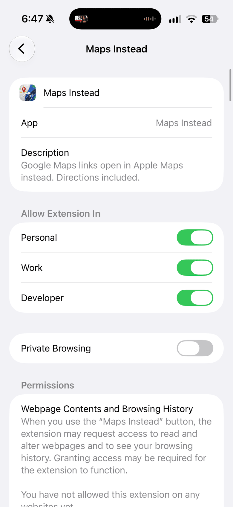
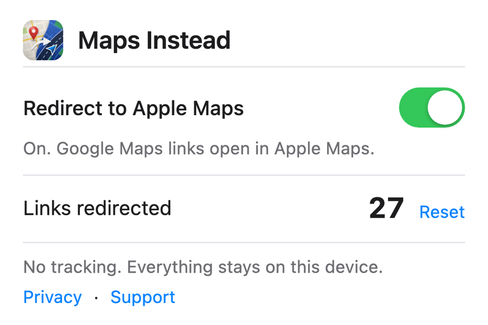

Google Maps links open in Apple Maps
Directions actually work
Shared links too
Set up in a minute
Privacy
you can check
you can check
Buy once.
Get all three.
Get all three.


Dinner here tonight?
maps.app.goo.gl/x7Qa


✓No analytics
✓No tracking
✓No data collected
✓Open source